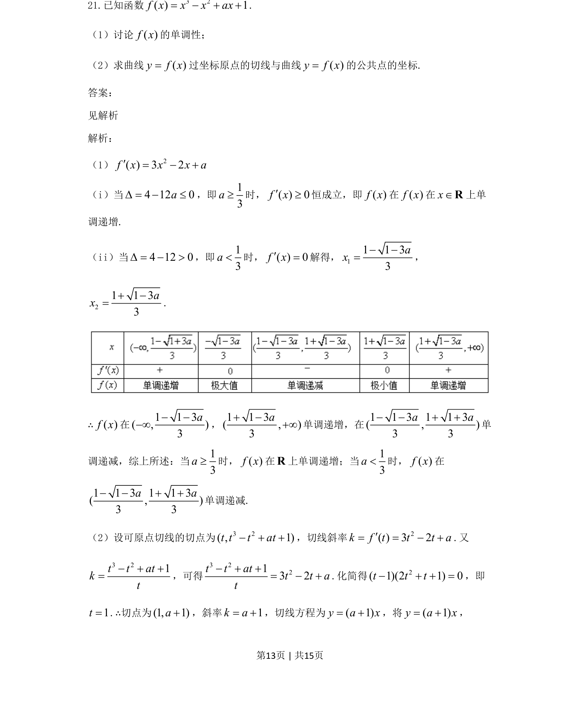
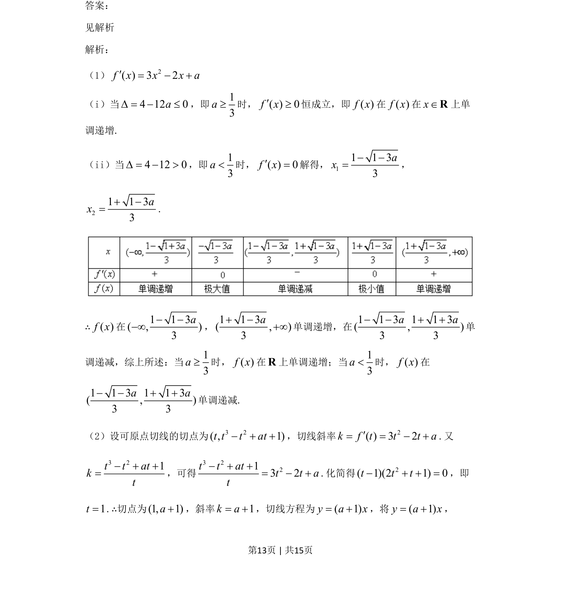
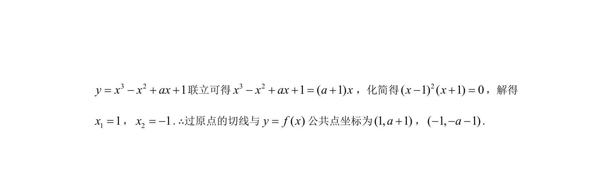

考点：利用导数研究函数的单调性 切线方程 参数讨论

已知三次函数解析式，讨论其单调性并求过原点的切线与曲线的公共点坐标。


📄 原 PDF 第 13 页：
素材/真题/吉林/2008-2024·（吉林）数学高考真题/2021年高考数学试卷（文）（全国乙卷）（新课标Ⅰ）（解析卷）.pdf
21.已知函数 3 2( ) 1f x x x ax= - + +. （1）讨论()fx的单调性； （2）求曲线()yfx=过坐标原点的切线与曲线()yfx=的公共点的坐标. 答案： 见解析 解析： （1） 2()32fxxxa¢=-+ （i）当4120aD=-≤，即13a³时，()0fx¢³恒成立，即()fx在()fx在xÎR上单 调递增. （ii）当4120D=->，即13a<时，()0fx¢=解得，11133ax--=， 21133ax+-=. ∴()fx在113(,)3a---∞，113(,)3a+-+∞单调递增，在113113(,)33aa--++单 调递减，综上所述：当13a³时，()fx在R上单调递增；当13a<时，()fx在 113113(,)33aa--++单调递减. （2）设可原点切线的切点为32(,1)tttat-++，切线斜率 2()32kfttta¢==-+.又 321ttatkt-++=，可得 3 2213 2t t att t at- + += - +.化简得 2(1)(21)0ttt-++=，即 1t=.∴切点为(1,1)a+，斜率1ka=+，切线方程为(1)yax=+，将(1)yax=+，